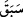
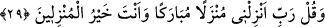

Teysîr’de şöyle geçmektedir: Nuh (a.s.) gemiye sadece doğuran ve yumurtlayan
hayvanları aldı.
Verilen hüküm zararlı olduğu için “
” fiili “
” harf-i cerri ile getirilmiştir. Nitekim
“Tarafımızdan kendilerine güzel âkıbet takdir edilmiş olanlara gelince…” (el-
Enbiyâ, /101) âyetinde verilen hüküm/takdir faydalı olduğu için lâm harfi ile
getirilmiştir.
“Zulmetmiş olanlar konusunda” onların kurtarılması için duâ ederek “bana hiç
yalvarma! Zira onlar kesinlikle boğulacaklardır.” Allah’a ortak koşmak ve diğer
günahlarla zulmetmeleri sebebiyle kesin olarak boğulmalarına hükmedilmiştir. Durumu
böyle olan kimseye şefâat edilmez ve onun hakkında şefâat de kabul olunmaz. Nasıl
olsun ki, gelen âyette Nuh (a.s.)’a helâk edilmek sûretiyle onlardan kurtulduğu için
Allah’a hamd etmesi emredilmiştir.
28. Sen, yanındakilerle birlikte gemiye yerleştiğinde: “Bizi zalimler
topluluğundan kurtaran Allah’a hamdolsun” de.
“Sen,” âilenden ve sana inananlardan “ yanındakilerle birlikte gemiye” binip
“yerleştiğinde: “Bizi zâlimler topluluğundan kurtaran Allah’a hamdolsun” de.”
Hepsi gemiye binmekte ve kurtuluşta müşterek oldukları halde fazîletini ortaya koymak,
onun duâ ve senâsında diğerlerine göre zorunluluk olduğunu hissettirmek içindir.
29. Ve de ki: Rabbim! Beni bereketli bir yere indir. Sen, iskân edenlerin en
hayırlısısın.
“Ve de ki: Rabbim! Beni” gemide veya gemiden “bereketli bir yere indir.” Yâni
bereketli bir indirmeyle indir ya da peşinden pek çok hayır gelecek bir yere indir.
Kâşifî der ki: “Bir görüşe göre bu duâ gemiden çıkarken emredilmiştir. Meşhur olan
görüşe göre ise gemiye binerken ve inerken bu duâ emredilmiştir.”
“
” kelimesi, ‘inme yeri’ anlamında “
” diye de okunmuştur. “
” aslında
yüksekten inmek demektir.
“Sen, iskân edenlerin en hayırlısısın.” Celâleyn’de şöyle der: “Allah “Ey Nuh!
Sana ve seninle beraber olan ümmetlere bizden selâm ve bereketlerle (gemiden)
in.” (Hûd, 11/48) buyurarak onun duâsına icâbet etti. Gemiden indirdikten sonra onlara